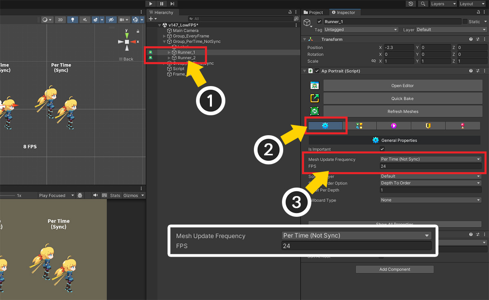
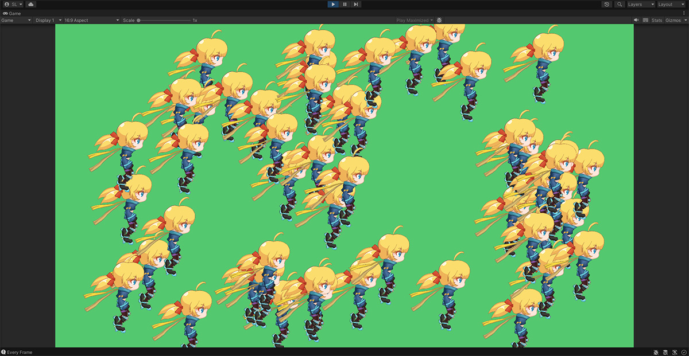
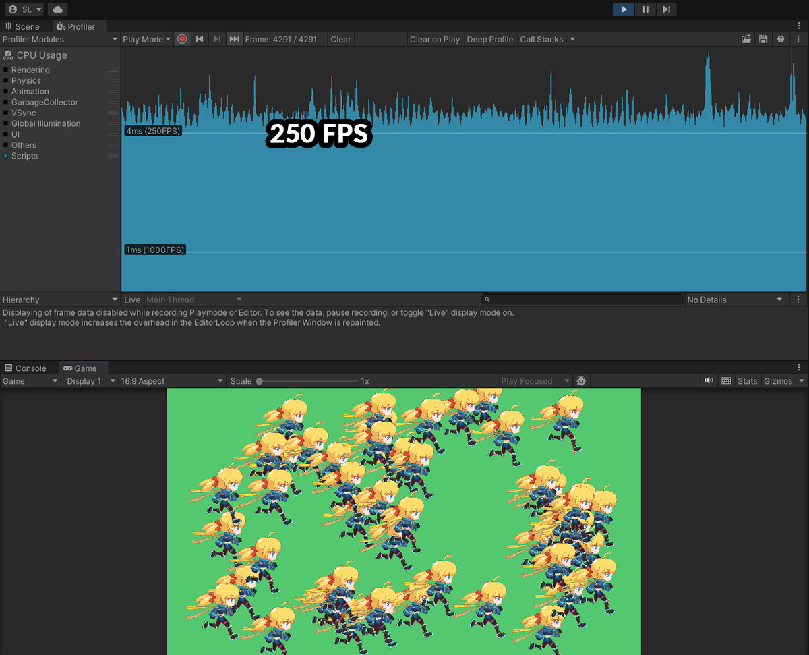
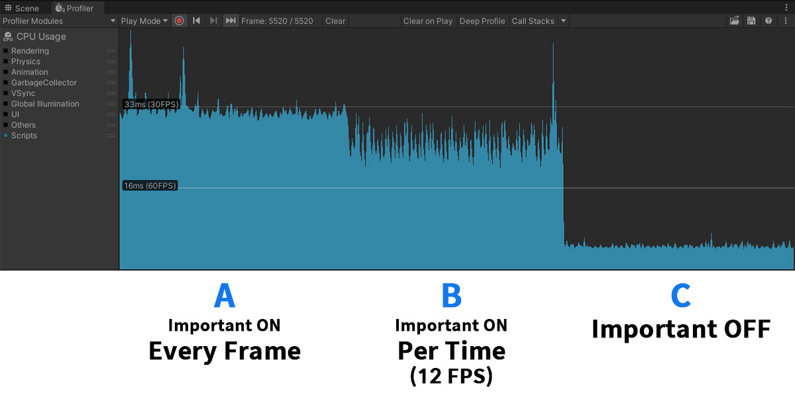
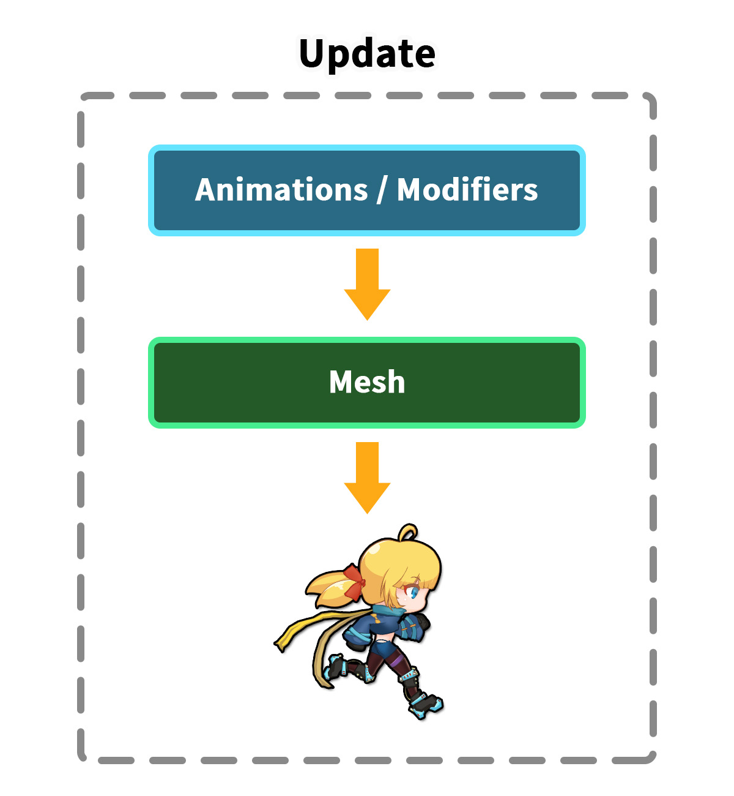
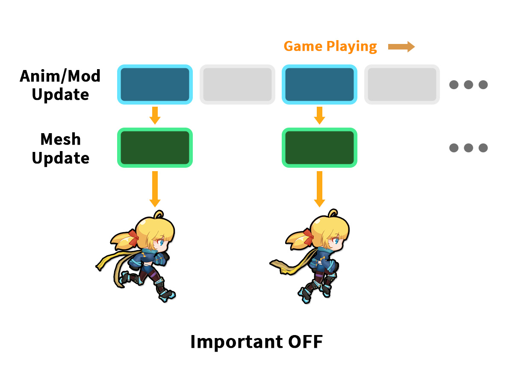

AnyPortrait > 메뉴얼 > 낮은 FPS로 재생하기
낮은 FPS로 재생하기
1.4.7
TV나 극장에서 상영되는 애니메이션을 보면 낮은 프레임에서 재생되는 것을 볼 수 있습니다.
손으로 일일이 그렸던 고전적인 제작 방식으로 인한 한계이겠지만, 그 낮은 프레임이 갖는 매력을 모두가 한번씩은 느껴봤을 것입니다.
AnyPortrait는 원래 게임을 목표로 개발되었기 때문에, 게임 중에는 매프레임마다 애니메이션에 의해 메시들이 갱신되지만,
만약 애니메이션의 FPS (Frames per second)를 줄여서 마치 고전적인 애니메이션과 같이 재생된다면 재미있는 연출을 할 수 있을 것입니다.

게임은 최대한 높은 FPS로 동작하기 때문에, 낮은 FPS로 애니메이션을 재생하고자 한다면 위와 같이 처리를 해야할 것입니다.
(1) 기본적으로는 게임의 매 프레임마다 애니메이션에 맞게 메시들이 갱신이 될 것입니다.
(2) 낮은 FPS로 애니메이션을 재생하기 위해서는 게임의 특정 프레임에서는 메시가 갱신이 되고, 그 외의 프레임에서는 갱신이 되지 않은채 이전 상태가 유지가 되어야 할 것입니다.
즉, "메시가 갱신되는 빈도"를 조절하는 것이 낮은 FPS로 애니메이션을 재생하기 위한 접근법입니다.
이 페이지에서는 "메시 갱신 빈도 (Mesh Update Frequency)" 옵션을 이용하여 FPS를 줄이는 방법에 대해서 다룹니다.
메시 갱신 빈도 옵션 설정하기
AnyPortrait v1.4.7에서 추가된 "메시 갱신 빈도 (Mesh Update Frequency)" 옵션을 이용하면 애니메이션의 FPS를 조절할 수 있습니다.
이 옵션을 변경할 수 있는 3가지 방법을 이용해보세요.

첫번째 방법은 "Bake 다이얼로그"에서 옵션을 설정하는 것입니다.
(1) Bake 버튼을 눌러서 Bake 다이얼로그를 엽니다.
(2) Setting 탭을 선택합니다.
(3) Mesh Update Frequency 옵션의 값을 변경합니다.
다음의 3개의 방식의 옵션들이 있습니다.
- Every Frame : 매프레임마다 매시들이 갱신됩니다. (기본값)
- Per Time (Not Sync) : 낮은 FPS로 메시들이 갱신됩니다.
- Per Time (Sync) : 낮은 FPS로 메시들이 갱신되며, 같은 옵션의 캐릭터들간의 메시 갱신 타이밍이 동기화됩니다.

Every Frame을 제외한 나머지 두개의 옵션이 이 페이지에서 다루는 낮은 FPS로 재생하기 위한 설정입니다.
위와 같이 Per Time (Not Sync) (또는 Per Time (Sync))를 설정하면 어느 FPS로 재생할지를 설정하는 "FPS" 옵션이 추가로 등장합니다.
여기서 일반적인 영상 재생률인 60보다 낮은 값을 입력하면 고전 애니메이션같은 느낌을 줄 수 있을 것입니다.
주의
FPS 옵션값으로서 최대 30 FPS의 값만 입력할 수 있습니다.
일반적인 화면 재생률인 "60 FPS"를 기준으로, 만약 "30~60 FPS 사이의 값"을 입력하게 된다면, "연속적으로 재생되는 프레임"과 "쉬어가는 프레임"이 번갈아가면서 처리될 것입니다.
이것은 좋은 결과를 보여주지 못하기 때문에, 최대 30 FPS으로 제한되어야 합니다.

두번째 방법은 "Inspector UI"에서 설정하는 것입니다.
(1) 유니티 씬에서 캐릭터를 선택합니다.
(2) "기본 설정(General Properties)" 탭을 선택합니다.
(3) Bake 다이얼로그와 동일하게 Mesh Update Frequency 옵션을 설정합니다.
세번째 방법은 스크립트를 이용하는 것입니다.
apPortrait의 다음의 함수를 이용해보세요. (스크립트 설명 페이지)
1. public void SetUpdateMeshesEveryFrame()
: 메시 갱신 빈도를 "Every Frame"으로 설정합니다.
2. public void SetUpdateMeshesPerTime(int fps, bool isSyncUpdate)
: 메시 갱신 빈도를 "Per Time"으로 설정합니다.
- int fps : 재생 빈도에 해당하는 FPS 값입니다. 30이하의 값을 입력해주세요.
- bool isSyncUpdate : true를 입력하면 다른 캐릭터와 메시 갱신 타이밍이 동기화됩니다.
이 옵션들을 이용하여 애니메이션의 FPS를 조절한 결과를 다음의 동영상으로 확인해보세요!
각각의 옵션과 주요 FPS에 대해서 비교하면서 볼 수 있습니다.
Per Time 옵션의 경우, 동기화 여부의 차이도 같이 확인해보세요.
Important 옵션과 성능 비교
AnyPortrait의 "Important" 옵션도 재생 빈도, 즉 FPS와 관련된 옵션입니다. (관련 페이지)
최적화를 위해서 Important 옵션을 비활성화 할 수 있고, 간헐적인 업데이트를 위한 FPS를 설정할 수 있습니다.
따라서 "Important 옵션 비활성화"와 "메시 갱신 빈도의 Per Time 옵션"은 얼핏 같은 것처럼 보입니다.
하지만 이 두가지 옵션은 완전히 다른 목적으로 개발되었기 때문에 다음과 같은 차이점이 있습니다.
1. Important 옵션
이 기능은 최적화를 위해서 제공되는 옵션입니다. (Important 옵션을 비활성화하는 경우)
수많은 캐릭터들이 씬에 등장하는 경우, 비교적 덜 중요한 캐릭터들의 연산을 분산시키는 역할을 수행합니다.
게임의 상태에 맞게 FPS가 조절되며, 연산이 특정 프레임에 모이지 않도록 분산시킵니다.
상황에 따라선 지정된 FPS보다 훨씬 낮은 FPS에서 업데이트되기도 합니다.
또한, 업데이트가 간헐적으로 동작함에 따라 연산 오류가 예상되며 실제로도 무거운 성능의 "물리 기능(Jiggle Bone, Physics Modifier)"은 아예 비활성화됩니다.
2. 메시 갱신 빈도 옵션
이 기능은 오직 시각적인 연출을 위한 기능이며, 성능 최적화를 위한 기능이 아닙니다.
대신 Important 옵션 여부와 다르게 모든 옵션에서 물리 기능 등이 동작한다는 특징이 있습니다.
두가지 옵션에서 가장 큰 차이를 보이는 것은 성능입니다.
다음의 프로파일링 결과를 통해서 차이점을 확인해봅시다.

위와 같이 캐릭터를 50번 복제한 후 재생하는 씬을 구성했습니다.

먼저 Important 옵션이 켜진 상태에서 메시 갱신 빈도 옵션을 Every Frame으로 설정했습니다.
이 상태는 AnyPortrait의 기본값이기도 합니다.
게임을 실행하면 프로파일러를 통해서 게임이 대략 30 FPS 정도를 기록하는 것을 볼 수 있습니다.

다음은 Important 옵션이 켜진 상태에서 메시 갱신 빈도 옵션을 Per Time (Sync - 12FPS)으로 설정했습니다.
게임을 실행하면 30 FPS에서 60 FPS 사이의 성능값이 큰 편차와 함께 기록됩니다.
평균 프레임은 조금 향상된 것처럼 보이지만 편차가 크기 때문에 체감되는 성능 향상은 크지 않을 것입니다.

마지막으로 Important 옵션을 끈 상태입니다. (이 상태에서는 메시 갱신 빈도 옵션이 적용되지 않습니다.)
게임의 성능이 비약적으로 상승되는 것을 볼 수 있습니다.
캐릭터의 연산들이 분산되었기 때문에 성능 편차가 크지 않는 것도 같이 볼 수 있습니다.
다만, 게임의 성능을 위해서 캐릭터들 각각의 애니메이션의 FPS는 크게 낮아집니다.

프로파일링 결과를 위와 같이 정리할 수 있습니다.
메시 갱신 빈도 옵션의 작동 원리
메시 갱신 빈도 옵션이 간헐적인 애니메이션 프레임을 가진다는 점에서 성능 향상이 크지 않는 것은 의아해보일 수 있습니다.
다음의 설명은 이 기능에 대해 더 자세히 이해해는데 도움이 될 것입니다.
앞선 프로파일링 실험을 참고하면서 읽어보세요.

AnyPortrait는 게임이 실행될 때 위와 같은 순서로 업데이트가 됩니다.
먼저 애니메이션, 모디파이어 등이 일괄적으로 연산이 됩니다.
그리고 그 연산 결과가 메시에 반영이 되어, 메시의 외형이 변경됩니다.

그리고 이 과정은 게임의 매 프레임마다 수행이 됩니다.
기본 설정(Important가 활성화되고 메시 갱신 빈도 옵션이 Every Frame으로 설정된 상태)이 이 경우에 해당됩니다.

여기서 메시 갱신 빈도 옵션을 Per Time으로 변경하여 낮은 FPS로 애니메이션을 재생하면 위와 같이 처리 방식이 변경됩니다.
애니메이션과 모디파이어의 연산은 매 프레임마다 수행되는 반면, 메시의 외형을 갱신하는 연산이 불연속적으로 수행됩니다.
메시가 갱신되지 않는 프레임에도 애니메이션과 모디파이어는 계속해서 업데이트되기 때문에 물리 기능이나 다른 애니메이션 플레이, 메시의 가시성 여부 전환, 외부에서 캐릭터 제어하기 등의 경우에도 빠르게 반응할 준비가 되어있습니다.
즉, 겉보기와 다르게 계속해서 기민하게 연산이 이루어져서 게임 시스템에 영향을 주지 않습니다.

마지막으로 Important 옵션을 비활성화한 경우입니다.
이 기능은 메시 갱신을 비롯하여 애니메이션과 모디파이어의 연산까지 모두 간헐적으로 수행합니다.
성능 제어를 위한 일부 연산만 매 프레임 동작할 뿐이며, 대부분의 연산이 불연속적으로 수행되기 때문에 성능 향상에 큰 도움이 됩니다.
하지만 연산이 이루어지지 않는 과정에서의 기민한 반응을 하기가 어려우며, 물리 기능과 같이 연속적인 연산 처리가 불가하다는 단점이 있습니다.
이 차이점들을 확인하여, 필요에 맞는 옵션을 사용하시면 되겠습니다.
메시 갱신 옵션을 Per Time으로 설정할 경우, 다음의 특징들을 가집니다.
- 루트 유닛, 메시의 가시성, 객체의 크기 반전 여부의 변경이 발생하면 옵션에 관계없이 즉시 메시가 갱신이 됩니다.
- 본은 연속적으로 업데이트되기 때문에 소켓(Socket) 역시 옵션에 관계없이 매 프레임 이동합니다.